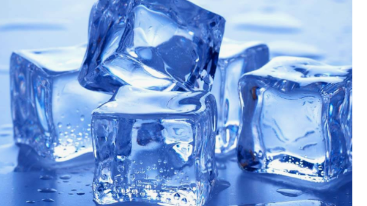

A origen do gelo
Como surgio o gelo?
Na antiguidade já se fabricava o gelo através de processos rudimentares: Na Babilônia, Alexandre Magno mandava encher de água vasos de argila porosa e os mantinha, ao cair da tarde, presos a galhos de arvores. A água se congelava pela ação do frio extremo da noite. Tinha assim, o gelo.
Qual a importancia do gelo?
O gelo é importante porque ele é feito de água, uma das substâncias mais importantes para manter a vida de vários seres vivos, como plantas, animais e até mesmo os seres humanos.
Gelo é agua?
Não
Gelo é alimento?
Gelo é alimento? Essa é uma pergunta que provavelmente você nunca pensou ou questionou, não é mesmo? Isso se justifica porque o produto acaba passando despercebido, pois é utilizado apenas para gelar alguma bebida ou para manter a temperatura de algum alimento. Mas sim, gelo é alimento.